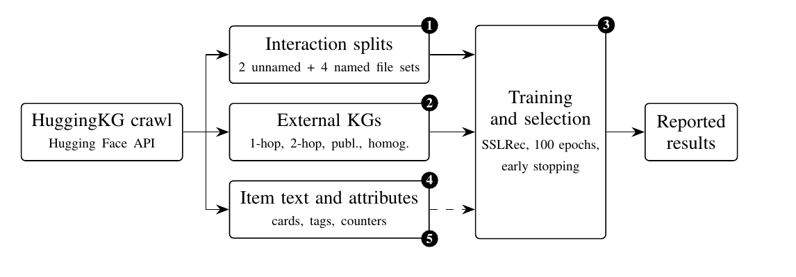
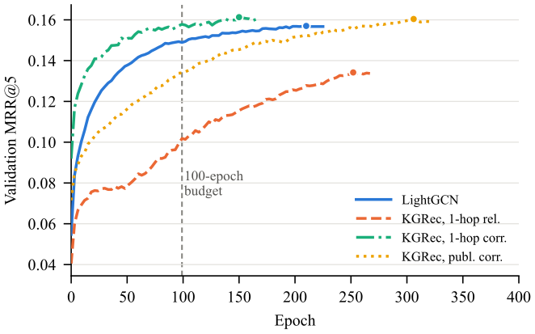
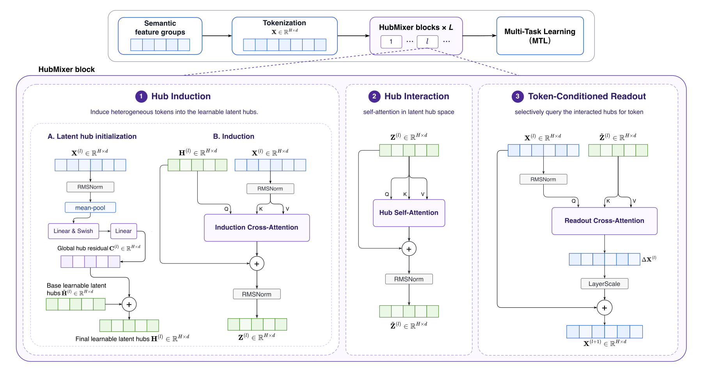
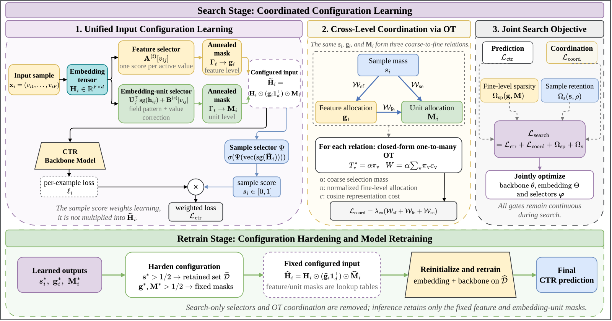
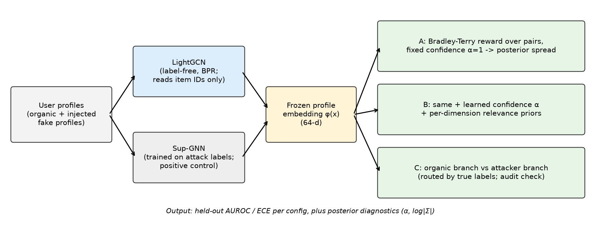
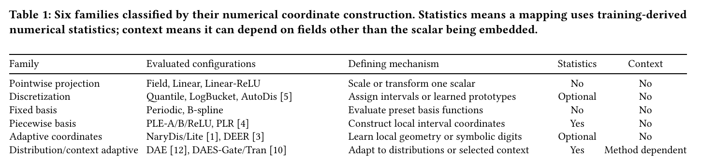

做推荐评测的人值得读，因为它查出的问题不在模型，而在数据文件之间的对应关系。推荐 Hugging Face 模型和数据集的公开基准 HuggingBench 里，四份描述物品的知识图谱有三份把物品编号对错了，基于知识图谱的推荐模型一直把别的物品的信息当成这个物品的。这些文件能通过常规的主键和取值范围检查，只有按内容去对才发现错位。改正后，所有基于知识图谱的方法都变好，平均召回率最多提高 73%。基准还带着每个物品的文字介绍，却没有已报告的方法用过；用上这些文字的线性模型在 CPU 上几分钟训完，召回率比已报告的最好结果高 17%。
它到底在解决什么问题？
HuggingBench 是 SIGIR 2025 发表的基准，任务是根据用户在 Hugging Face 上点过赞的模型、数据集和 Spaces，给他推荐新的资源。数据有 38,624 个用户、25,080 个物品，按每个用户 60%、20%、20% 切成训练、验证和测试。除了点赞记录，它还发布了四份外部知识图谱，描述物品之间的关系，比如某个模型是另一个模型的微调版、某个 Space 用了哪个模型、谁是发布者。
基于知识图谱的推荐模型（KGIN、KGRec，以及用对比学习的模型 KGCL）有一个默认约定：交互文件里编号为 i 的物品，就是图谱里编号为 i 的实体。它们只按编号读数据，不看名字。下面用一个示意例子说明约定被打破时会发生什么。
| 编号 | 交互文件里的物品 | 图谱里同编号的实体 |
|---|---|---|
| 0 | Llama 的某个量化版 | 一个图像分割数据集 |
| 1 | 一个中文问答数据集 | 某个语音识别 Space |
| 2 | 某个语音识别 Space | Llama 的某个量化版 |
（示意）模型以为自己在学“0 号物品是 Llama 的量化版、和 Llama 有关”，实际上拿到的是一个数据集的关系。作者按名字把物品列表和实体列表对了一遍：只有同构图满足约定；1-hop 和 2-hop 图里 25,080 个物品没有一个编号对得上，发布者图里只有 4 个对得上。
为什么常规检查发现不了？
每套图谱文件都通过了 34 项主键和取值范围检查：编号连续，名字不重复，切分互不相交，所有编号都不越界，每个物品编号也都是合法的实体编号。单看每个文件都是对的，错在两个文件之间的对应关系。只有把两份列表按名字连接，再断言“物品 i 等于实体 i”，才会报错。作者把检查分成六组。前三组看三件事：切分是否干净，同一份数据的不同编码是否一致，按编号连接和按名字连接的结果是否一致。这三组共 219 项检查，在 CPU 上 87 秒跑完。原始文件里只有“物品 i 等于实体 i”这类检查失败，共 75,238 处违例。
问题是怎么混进来的也有线索：同一份点赞数据在发布包里有六套编码，每套编号都不同。任意两套图谱文件之间，25,080 个物品里至少有 25,077 个编号不同，而且发布包里没有映射表。每份图谱都用自己的编号导出，这可以解释错位为什么一直没人察觉。

改正之后，结论变了多少？
作者用原论文的超参数网格和选择方式，在三个随机种子上重跑了所有基于知识图谱的方法。
| 方法 | 1-hop 原始 | 1-hop 改正 | 发布者图原始 | 发布者图改正 |
|---|---|---|---|---|
| KGCL | 0.1496 | 0.1591 | 0.1540 | 0.1604 |
| KGRec | 0.0845 | 0.1457 | 0.0943 | 0.1204 |
| KGIN（原作者代码） | 0.1169 | 0.1445 | 0.1152 | 0.1475 |
（测试集 Recall@10，三个种子的均值，数字来自论文表 V）
每个方法在每张图、每个种子上都变好了，提升从 4% 到 73%，KGCL 最少，KGRec 最多。同构图原本就是对齐的。改正后，KGRec 和 KGIN 用每一张改正过的图，都在每个种子上超过了同构图；KGCL 用改正过的图，和同构图平均只差不到 0.0019。原来看到的图谱排名，被编号是否对齐带偏了。作者统计了 27 组先后顺序：同一个方法换不同的图谱比，或者同一张图谱换不同的方法比。改正图谱后，其中 10 组在三个种子上都反了过来。例如在 2-hop 图上，KGIN 原来领先 KGRec，改正后反而落后。
按相对幅度看，收益主要落在冷门物品上。以 KGRec 用 1-hop 图、训练 500 轮、种子 42 的结果为例：训练集里只有 1 到 4 个赞的物品，测试点赞被排进前 10 名的比例从 0.004 升到 0.020，是原来的五倍；至少 100 个赞的热门物品只从 0.148 升到 0.155。训练赞数少于 100 的物品占了 54% 的测试点赞。图谱错位时，模型的命中大多落在热门物品上。总体指标本来就由热门物品主导，所以这个错误很难从总分里看出来。
还有一个疑问：改正带来的是“拿到了自己的信息”，还是只是“拿到了同类物品常见的那种信息”？作者做了一个对照：把实体打乱后重新分给物品，但只在同一类物品（模型、数据集或 Space）、而且图谱事实数在同一档（按 0、1、2–4、5–9 等分档）的物品之间交换。这样每个物品拿到的是一个同类、信息量相近的别人的实体。正确对齐的图在所有种子上都比这些随机分配好，随机分配又都比原始错位的图好。也就是说，拿到自己的信息有用，拿到同类、信息量相近的信息也有用。作者也承认，这个对照无法把这两部分完全分开。
训练轮数不够，也会改变排名
HuggingBench 的协议是最多训练 100 轮，验证指标连续 5 次评估不提升就提前停止。提前停止的前提是轮数上限足够大。作者记录了 29 个设置在每个种子下的最佳轮次，发现有 7 到 8 个设置在 100 轮时还没触发提前停止就被截断了。把上限放到 500 轮、其余不变，23 个被截断的设置和种子组合里有 21 个变好，最佳轮次落在第 105 到 354 轮之间，不是多跑几轮的小差别。KGRec 用原始 1-hop 图时，Recall@10 提高 31%。这意味着在同样 100 轮下比较两个方法，比的有一部分是谁收敛得快。
轮数上限还放大了图谱错位的代价。错位图上的模型收敛更慢，100 轮截断让它吃亏更多。上限放到 500 轮后，KGRec 在 1-hop 图上改正前后的差距从 0.0613 缩到 0.0374（三个种子的均值），但改正后的图在每个种子上仍然更好。

没人用的文字，才是最强的信号
基准里每个物品都带着文字：类型、名字、标签、模型卡或数据集卡的描述。原论文的 11 个方法都没用。
作者先试了不用任何附加信息的线性模型 EASE。它学一个物品对物品的权重矩阵 B：每个物品被哪些用户点过赞，要用其他物品的点赞记录来还原，而且不许用这个物品自己预测自己。这个问题有闭式解，只要对一个物品数乘物品数的矩阵求一次逆，不需要迭代训练。推荐时，把用户点过赞的那些物品在 B 里对应的行加起来，就是每个候选物品的分数。EASE 的 Recall@10 已经是 0.1684，高于所有已报告、复现和改正后的结果。
加文字的办法是改那个要求逆的矩阵：
是用户对物品的点赞矩阵， 记录两个物品被同一批用户点赞的次数； 是文字相似度矩阵，第 i 行第 j 列是物品 i 和 j 的 TF-IDF 余弦相似度，对角线为 0； 是在验证集上选的权重， 是正则项。我的理解是：文字相近的两个物品，在求逆前的矩阵里就像多了一些共同用户；最终 B 里它们之间的权重由整体求逆决定，不保证一定为正。文字在求解时就融进了固定的 B，推荐时的算法和原来一样，不用每次另算相似度。加入文字相似度后，Recall@10 升到 0.1846，比已报告的最好结果高 17%。这些线性模型都在 8 核 CPU 上几分钟算完。 Hoot 说

- 两物品示意：A 有 4 人点赞，A 和 B 只有 1 位共同用户，λ 取 1。不加文字时，A 对 B 的权重是 1 ÷ 5 = 0.2。
- 加文字：两者文字相似度 0.5，w 取 4，相当于多了 2 位共同用户。权重变成 3 ÷ 5 = 0.6。
- 推荐时，一个只点过 A 的用户，B 的分数就是 A 那一行里的 0.6。
只有两个物品时，可以手算。文字相近，就像两个物品多了几位共同用户。这份加成在求逆时就写进了 B。推荐时不再碰文字。物品一多，权重由整体求逆决定，不一定为正。 出处: 论文中 EASE 加文字相似度的式子与表 VII；两物品的数字为示意
| 方法 | Recall@10 |
|---|---|
| 已报告最好（KGCL，同构图） | 0.1578 |
| 改正后最好的知识图谱方法（KGCL，发布者图） | 0.1604 |
| EASE | 0.1684 |
| EASE + TF-IDF 文字 | 0.1846 |
（数字来自论文表 VII）
一个反直觉的细节：输入文字完全相同时，TF-IDF 在四组对比里都赢了 bge-m3 和 Qwen3-Embedding-0.6B 的 embedding。作者给的解释是 Hub 上的文字高度模板化，同一发布者的两个模型 TF-IDF 余弦中位数是 0.40，随机两个模型只有 0.03，发布者名和模型名里的字面重合本身就是强信号。只用物品类型加“组织/名字”这个标识，Recall@10 就有 0.1850，和用全文的 0.1846 差不多。
我认为它的局限
第一，这是对一个基准的审计，结论只在 HuggingBench 上验证过。作者检查了其他推荐数据发布，只发现同一数据集的不同发布版本编号不兼容，没有再找到同样的错位。
第二，“文字最强”有数据本身的原因：Hub 上大量物品是同一基础模型的量化版和适配器，名字几乎一样，字面匹配天然占优。在商品或内容推荐里，文字未必有这么强。
第三，随机重分配的对照保留了度数分布但不完全等同于每个物品的结构，作者自己也说这个对照不能把“拿到自己的信息”和结构效应完全分开。
一个推荐团队可以怎么用
- 给离线评测数据加一条按内容连接的检查：交互表和特征表、图谱之间，对全部物品按名字或内容 ID 连接一次，断言编号对应一致。这只要几秒，能抓住单文件检查看不到的错位。
- 记录每个实验的最佳轮次，凡是最佳轮次贴着上限的，标记出来重新跑。否则两个模型的比较里混进了收敛速度。
- 在复杂模型之前，先跑一个 EASE 加文字相似度的闭式基线。它几分钟就能算完，如果它已经赢了，说明复杂模型的收益要重新解释。
结论
公开基准上的排名，先要确认数据本身对得上。这篇论文最有用的不是哪个新模型，而是一套能直接复用的检查：数据文件之间按内容对一遍，训练轮数看一眼最佳轮次，再拿最简单的线性模型试一下没用过的信息。
| 维度 | 评价 |
|---|---|
| 问题重要性 | 高。错位让一整类方法被低估，还反转了三分之一以上的图谱配置比较 |
| 方法创新性 | 中。检查本身不复杂，价值在系统地做完并量化后果 |
| 实验证据 | 高。三个种子、配对置信区间、随机重分配对照都有 |
| 工程成本 | 低。检查 87 秒跑完，线性基线在 CPU 上几分钟 |
| 是否值得尝试 | 值得。任何用多份文件拼起来的评测集都可以照做 |
读完这篇，你觉得
夜读鸮记下了，谢谢你的反馈。
点一下即可，无需登录；再点一次撤回。只统计匿名次数，不记录你是谁。
相关论文RELATED

Personalization · 2026-09-01HubMixer: Progressive Latent Hub Mixing for Parameter-Efficient Feature Interaction in Recommendation针对推荐与广告排序中异构特征直接全量混合导致参数浪费的问题，HubMixer 用少量可学习 latent hub 依次执行特征归纳、hub 间高阶交互和 token 条件化回写，复杂度从 token 两两交互转为与 T×H 成正比。快手招聘短视频业务的 7 天 A/B 测试覆盖 7.2% 流量，简历投递转化率显著提升 5.48%，模型已全量部署。
Personalization · 2026-10-28Towards a Unified Framework of Optimal Input-Side Dimensional Configuration for Deep CTR PredictionCTR 模型的输入端有三种常见删减，即丢掉质量差的训练样本、关掉没用的特征、剪掉 embedding 里没用的维度，以往的方法一次只做其中一种。深圳大学等单位的这篇论文指出，三者其实是同一个动作，都是给同一个 embedding 张量乘一个掩码，只是粒度不同。它们还互相牵连，一个特征被整个关掉之后，它内部的维度怎么剪都不再起作用。在 Avazu 上用 DNN（多层全连接网络），单独做任何一种选择只把 AUC 提高约 0.001；把三种放进一个模型一起学，并加惩罚让各层决定互相配合后，AUC 从 0.7893 提到 0.7930。以样本和特征这一层为例，惩罚把每个特征 embedding 到样本平均 embedding 的余弦距离按特征门控加权求和，再乘以样本权重，高权重样本若给离群特征开大门控就会被重罚。
Personalization · 2026-11-04Auditing Representation-Space Fraud Detection: A Bayesian IRL Framework for Calibrated Uncertainty and Its Limits刷单检测几乎只报一个 AUROC，可这个数说明不了检测器什么时候可信。这篇论文搭了一套审计框架来检查这件事。常见的假账号注入都能被抓住。换成照抄真实用户的攻击后，结果完全不同：每个假账号复制一个真实用户评过的全部电影，再塞进 1 到 3 部目标电影，MovieLens-1M 上的 AUROC 掉到和随机猜一样。可直接比原始记录里账号之间评过物品的最大重合度，AUROC 就有 0.92–0.97。问题出在 embedding 上：LightGCN 只看评过哪些物品，再经过图传播把相似账号抹平，这个信号就丢了。
Personalization · 2026-11-04Numerical Embeddings for CTR Prediction: A Taxonomy, Unified Benchmark, and Open-Source FuxiCTR ExtensionCTR 模型里把价格、次数这类数值特征变成向量的方法有十几种，放到同一个公平的比较里看，并没有一种能通吃。以前很难比清楚，因为各家论文的预处理和训练流程都不一样。这篇论文把 18 种做法放进同一套代码，给同样的调参预算，在多个数据集和主干模型上逐一比较。综合排名最好的是 DEER，但它没有通吃，换个数据集或主干，领先者就可能换人。把输入从标准化后的数值换回原始尺度，27 组设置里有 11 组冠军变了。精度和推理耗时也不一定同涨同跌。所以数值特征怎么编码，要在自己的数据和主干上重新比一遍。
讨论
欢迎补充实验细节、复现经验或不同看法。需 GitHub 登录。
正在加载讨论…